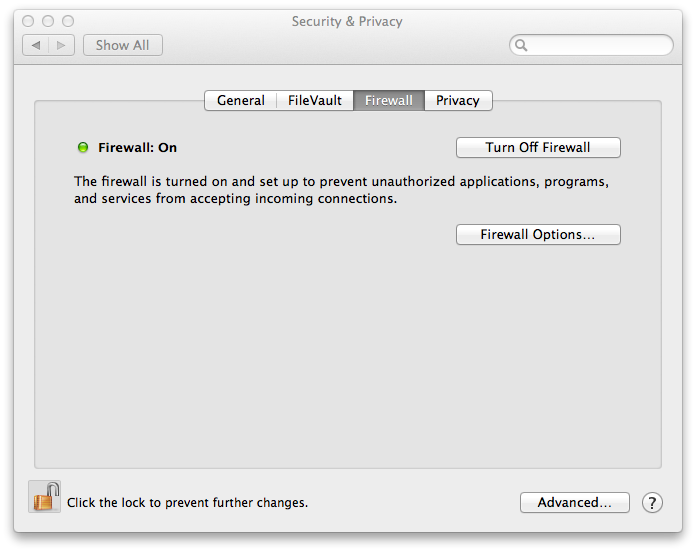
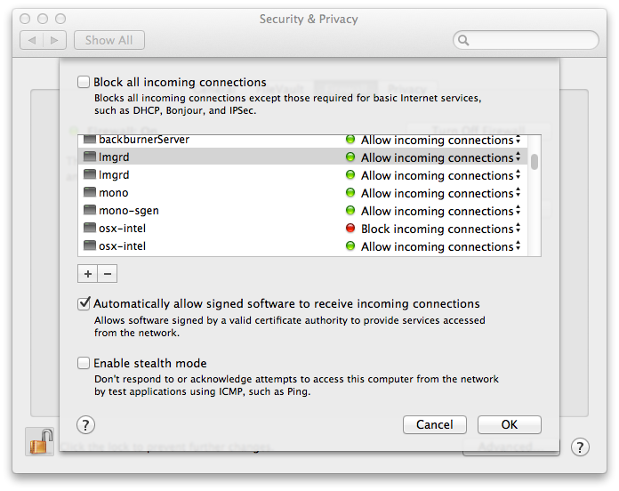

Database and Repository Installation (Advanced)¶
Overview¶
Before proceeding with this installation, it is highly recommended to read through the Render Farm Considerations documentation, including the AWS Thinkbox Deadline Shared Responsibility Model. It outlines what AWS Thinkbox is responsible for and what customers are responsible for, and should be considered before installing and using Deadline.
The Database is the global database component of the Deadline Render Farm Management System. It stores the jobs, settings, and Worker configurations. The Clients access the Database via a direct socket connection over the network. It only needs to be installed on one machine (preferably a server). Deadline uses MongoDB for the Database.
The Repository is the global file system component of the Deadline Render Farm Management System. It stores the plugins, scripts, logs, and any auxiliary files (like scene files) that are submitted with the jobs. The Clients access the Repository via a shared network path. It only needs to be installed on one machine (preferably a server).
The Database and Repository together act as a global system where all of Deadline’s data is stored. The Clients then connect to this system to submit, render, and monitor jobs. It is important to note that while the Database and Repository work together, they are still separate components, and therefore can be installed on separate machines if desired.
Note
The Repository installer requires an internet connection to download and install the MongoDB database. If your operating system isn’t supported, or if an internet connection isn’t available, you must manually install the database by following the Manual Database Installation documentation. When running the Repository installer, you can then choose the option to connect to an existing MongoDB database.
Installation¶
While the Repository can be installed on any operating system, the Repository installer is only available for Windows, Linux, and macOS. However, the machine that you run the Repository installer on doesn’t have to be the same machine you’re installing the Repository to. For example, if you have an existing share on a FreeBSD server or a NAS system, you can run the Repository installer on Windows, Linux, or macOS and choose that share as the install location.
If you are installing the Repository on a Linux machine, we highly recommend that you Validate the Linux Installers.
To install the Repository, simply run the appropriate installer for your operating system and follow the steps. This procedure is identical for all operating systems. The Repository installer also supports silent installations. If you are installing on macOS Catalina, you may see a warning that the installer ‘can’t be opened because Apple cannot check it for malicious software’. This is because the installer has not been notarized by Apple. In this case you need to right-click the installer icon, and choose “Open” in the pop-up menu that appears.
When choosing the Installation Directory, you can choose either a local path on the current machine, or the path to an existing network share. Note that if you choose a local path, you must ensure that path is shared on the network so that the Clients can access it.
Warning
Do NOT install over an existing installation unless it’s the same major version, or there could be unexpected results.
Warning
Checking Set full read/write access for files for all users will make the file permission of the Repository Directory readable/writable to any users. However, the /bin folder will be restricted to only Administrator/root writable. For setting the file permission for the Repository Directory, it is recommended to follow the best practice in Sharing The Repository
If you’re installing over an existing Repository installation, all previous binaries, plugins, and scripts will be backed up prior to being overwritten. After the installation is complete, you can find these backed up files in the Backup folder in the Repository installation root. Note that installing over an existing repository is only supported for repairing a damaged repository, or for performing a minor upgrade. Major upgrades require a fresh repository installation. See the Upgrading or Downgrading Deadline Documentation for more information.
After choosing the Repository Installation directory, you will be asked to choose the type of Database you want to use. You can choose either MongoDB or DocumentDB. For details about using DocumentDB, please refer to Using DocumentDB. If you choose MongoDB, you will be asked to install a new MongoDB Database, or connect to an existing one.
Installing a New MongoDB Database¶
If you choose to install a new MongoDB Database, you can then choose to have the installer download MongoDB for you. Note though that this requires an internet connection. For maximum compatibility with Deadline, we recommend you use MongoDB version 5.0.0 through 6.0.16. However, for security, you may need to use a later patch version for 6.0.16 if 6.0.16 has any security issues that might affect you.
If you do not have an internet connection on the machine you’re running the installer on, your other choice is to simply download the MongoDB pre-packaged binaries from another machine with an internet connection. Just make sure to download the .tgz or .zip file for your operating system (and not the .msi file if you’re installing on a Windows machine). After downloading the MongoDB package, copy it to the machine you’re running the installer on, and then specify the path to it in the Repository installer.
If you choose to download MongoDB, you then need to agree with the SSPL license from MongoDB to continue the installation process.
Note
When specifying the path to the pre-packaged binaries, the Repository Installer is expecting a .tgz or .zip file that was downloaded from MongoDB’s website. It does not support binaries that were manually bundled.
Note
If you do not agree with the SSPL license of MongoDB, you will be unable to download MongoDB through Repository installer.
You will then be asked to choose an installation location, a hostname and a port number.
Warning
Ensure you choose locally attached storage to install the Database. Do NOT install the DB to a NAS/network drive. Do NOT share out the DB directory once installed.
The MongoDB Hostname is the host name or the IP address of the machine that the MongoDB database will be running on. If desired, you can specify multiple entries and separate them with semicolons. There are a couple reasons to specify multiple entries:
You have machines on different subnets that need to access the database differently (ie: machines in the cloud might use a different host name than machines on the local network).
Some machines need to resolve the database machine by its host name, and others need to use its IP address.
Note that if there are IP addresses listed that cannot be resolved, the Deadline Command application can run slower on Linux and macOS Clients because it won’t exit until the connection attempt for those IP addresses time out.
Next, you need to specify security options for the Database.
Although We strongly recommend enabling SSL/TLS authentication, you may choose to disable it by unchecking the Require client authentication via SSL/TLS checkbox. If it is enabled, you are presented with the following options:
Certificate Directory: The installer will generate the required certificates for authentication and place them in this directory. This is where you will find a client certificate that can be used to connect to the Database.
Certificate Password: You may associate a password with the client certificate. If you do, clients will require this password in order to connect to the Database. If you do not wish to set a password, leave this field blank.
Use client certificate for DB user authentication: If enabled, the client certificate will also be used for Database user authentication. The installer will create a user on the Database corresponding to the client certificate that is generated.
Note
Once the certificates have been generated, the ‘Deadline10Client.pfx’ file will need to be securely moved to client machines that are expected to connect to this Repository directly; it will be needed at connection time. In addition, the user(s) running the client processes will need to be granted Read access to the file (the installer creates the file with restrictive permissions).
Warning
It is important to be aware of who might have access to the file throughout the process of distributing it to the client machines – the operating system might change the access level of the file to be overly broad on a copy, for example. We recommend always maintaining each certificate with the minimal subset of permissions for the users that need to connect to the Deadline Repository.
When you press Next, the installer will install the database and try to connect to it and configure it for Deadline. This can take a minute or two. If an error occurs, you will be prompted with the error message.
If the setup succeeds, proceed to the Enabling Deadline Secrets Management installation step below.
Connecting to an Existing MongoDB Database¶
Warning
Do NOT install over an existing installation unless it’s the same major version, or there could be unexpected results.
If you choose to connect to an existing MongoDB Database, you will be asked to specify the Database Settings so that the installer can connect to and configure the Database. For maximum compatibility with Deadline, we recommend you use MongoDB version 5.0.0 through 6.0.16. However, for security, you may need to use a later patch version for 6.0.16 if 6.0.16 has any security issues that might affect you. If you want to upgrade your existing MongoDB installation, please refer to https://docs.mongodb.com/manual/tutorial/upgrade-revision/#upgrade-a-mongodb-instance.
These settings will also be used by the Clients to connect to the database. The following are required:
Database Server: The host name or the IP address of the machine that the MongoDB database is running on. If desired, you can specify multiple entries and separate them with semicolons.
Database Port: The port that the MongoDB database is listening on.
Database Name: The name of the Database. Make sure to enter the same name you used when you initially set up the Database. If you installed the Database using the Repository installer, it should be sufficient to leave it set to the default value.
Replica Set: If you set up your MongoDB database manually and it is part of a Replica Set, specify the Replica Set Name here. If you don’t have Replica Set, just leave this blank.
Next, you will be asked to provide security information for connecting to the Database.
If the Database does not have SSL authentication enabled, uncheck the Use SSL/TLS when communicating with server option. Otherwise, provide the following options:
Client Certificate: This is the path to a client SSL certificate to use when connecting to the Database.
Certificate Password: This is the password for the Database SSL certificate. If the certificate does not require a password, leave this field blank.
Use client certificate for DB user authentication: Enable this if the client certificate is also used for Database user authentication. Note that a user corresponding to the client certificate must already exist on the Database.
When you press Next, the installer will try to connect to the database using these settings to configure it. This can take a minute or two. If an error occurs, you will be prompted with the error message.
If the setup succeeds, you can then proceed to the Enabling Deadline Secrets Management installation step below.
Enabling Deadline Secrets Management¶
After the database is successfully installed and configured, you will be asked to enable the Deadline Secrets Management feature, which is used to securely manage secrets (passwords and API keys) in Deadline. Although we strongly recommend enabling the Deadline Secrets Management feature, you may choose to disable it by unchecking the Enable Deadline Secrets Management checkbox. Note that SSL/TLS must be enabled to use this feature. If Deadline Secrets Management is enabled, you are presented with the following fields:
Administrator Username: The username for the administrator user that will be used for managing all of the Deadline secrets.
Administrator Password: The password for the administrator user. Please ensure you have a secure means of storing your password as there is currently no way to reset the administrator password without reinstalling, which would result in all existing secrets being lost. Note that this password can be updated after installation by running the appropriate Administrator Command. Deadline Secrets Management is only as strong as the weakest administrator password, therefore we suggest making a strong password, with at least 8 characters.
If the setup succeeds, proceed with the installation of the Repository.
Importing Repository Settings¶
You can import Repository settings that were exported via the Repository Settings Importer and Exporter.
Import existing repository settings: Whether to import existing repository settings. Leave unchecked if you do not want to import repository settings.
Repository Settings Import File: The path to the file containing the repository settings to import. The file contents should contain the output from an export via the Repository Settings Importer and Exporter.
Import operation type: You can either replace the repository settings with the ones in the file or append the settings in the file with your repository settings.
DocumentDB¶
Alternatively, instead of installing an instance of MongoDB locally, you can setup the Deadline Repository against DocumentDB. If you choose to do this, you will first need to create a DocumentDB instance in your AWS account in the same VPC where your RCS EC2 instance will be running.
Log into your AWS Account, and go to the Amazon DocumentDB Console.
Click the Create button.
Go through the basic setup, You can toggle the “Show advanced settings” toggle to set a specific VPC.
After setup is complete. Download the CA cert by clicking on your new instance of DocumentDB, and check the Connectivity & Security Tab.
There you can just copy the S3 Link directly to your web browser’s address bar.
Note under the instances tab, the Cluster endpoint, Master username and Port.
Now we can proceed with the Deadline Repository installation.
Select DocumentDB as your database type.
Input the Cluster endpoint under Database Server, and update the port if necessary to the port noted earlier.
Input the Master username under User Name, and the password you set for it in the AWS console, also select the CA Cert downloaded earlier.
Command Line or Silent Installation¶
The Repository installer can be run in command line mode or unattended mode on each operating system. Note though that on macOS, you must run the installbuilder.sh script that can be found in the Contents/MacOS folder,
which is inside the Mac Repository Installer package.
To run in silent mode, pass the “–mode unattended” command line option to the installer. For example, on Windows:
DeadlineRepository-X.X.X.X-windows-installer.exe --mode unattended
To run in command line mode, pass the “–mode text” command line option to the installer. For example, on Linux:
./DeadlineRepository-X.X.X.X-linux-x64-installer.run --mode text
To get a list of all available command line options, pass the “–help” command line option to the installer. For example, on macOS:
/DeadlineRepository-X.X.X.X-osx-installer.app/Contents/MacOS/installbuilder.sh --help
Note that there are a few Repository installer options that are only available from the command line, which you can view when running the “–help” command. These options include:
--help: Display the list of valid options.--version: Display product information.--unattendedmodeui <unattendedmodeui>: Unattended Mode UI. Default:none. Allowed:none minimal minimalWithDialogs.--optionfile <optionfile>: Installation option file. Default:"".--debuglevel <debuglevel>: Debug information level of verbosity. Default:2. Allowed:0 1 2 3 4.--mode <mode>: Installation mode. Default:win32(Windows),gtk(Linux) orosx(macOS). Allowed:win32 unattended(Windows),gtk xwindow text unattended(Linux), orosx text unattended(macOS).--debugtrace <debugtrace>: Debug filename. Default:"".--installer-language <installer-language>: Language selection. Default:en. Allowed:en.--prefix <prefix>: The path to install the Repository to. Default:C:\Program Files\Thinkbox\DeadlineRepository<VERSION>(Windows),/opt/Thinkbox/DeadlineRepository<VERSION>(Linux) or/Applications/Thinkbox/DeadlineRepository<VERSION>(macOS), where<VERSION>is:10.--backuprepo <backuprepo>: If set to true, many folders in the Repository will be backed up before overwriting them. Default:true.--setpermissions <setpermissions>: If set to true, access rights will be set to 777 for the repository directory. On Linux, the installer must be run by root if this is set to true. Default:true.--dbtype <dbtype>: Option doesn’t need to be used. Defaults to MongoDB as database type. Specifying ‘DocumentDB’ will override this option and will run the installer as DocumentDB as database type. Default:MongoDB. Allowed:MongoDB DocumentDB.--installmongodb <installmongodb>: This will install a new Mongodb instance. On Linux/Mac, the installer must be run by root if this is set to true. Default: None (must be specified in unattended mode). Allowed:true false.--dbOverwrite <dbOverwrite>: Only applies if installing MongoDB. If true, any existing database will be over-written by the newly installed copy. Default:false.--prepackagedDB <prepackagedDB>: Location of prepackaged MongoDB binaries (.tgz, .zip). If set, overrides dbInstallationType to prepackagedDB. Default:"".--dbInstallationType <dbInstallationType>: Option doesn’t need to be used. Defaults to downloading the database. Specifying ‘prepackagedDB’ with an associated path will override this option. Default:downloadDB. Allowed:downloadDB prepackagedDB.--mongodir <mongodir>: Only applies if installing MongoDB. This is the path MongoDB will be installed to. Default:C:\Program Files\Thinkbox\DeadlineDatabase<VERSION>(Windows),/opt/Thinkbox/DeadlineDatabase<VERSION>(Linux) or/Applications/Thinkbox/DeadlineDatabase<VERSION>(macOS), where<VERSION>is:10.--backupdb <backupdb>: Only applies if installing MongoDB. If set to true, the data in the existing Database will be backed up before overwriting it. Default:true.--dbListeningPort <dbListeningPort>: Only applies if installing MongoDB. The port on which the installer MongoDB server will listen for incoming connections. If connecting to an existing server, use <dbport> instead. Default:27100.--certgen_outdir <certgen_outdir>: Only applies if installing MongoDB. The output directory in which generated x509 certificates will be placed. Default:C:\Program Files\Thinkbox\DeadlineDatabase<VERSION>\certs(Windows),/opt/Thinkbox/DeadlineDatabase<VERSION>/certs(Linux) or/Applications/Thinkbox/DeadlineDatabase<VERSION>/certs(macOS), where<VERSION>is:10.--certgen_password <certgen_password>: Only applies if installing MongoDB. Specifies a password to use when encrypting the Client Certificate. Leave blank to generate an un-encrypted private key (not recommended). Submitting a value with the prefix ‘env:’ will instruct the installer to pull the password from an environment variable. The name of the environment variable is the value after ‘env:’ (e.g. env:MY_VARIABLE). Default:"".--createX509dbuser <createX509dbuser>: Only applies if installing MongoDB. If this is enabled, the client certificate will be used as authorization for commands within MongoDB. This will enable authorization on the Database server. Default:true.--requireSSL <requireSSL>: Only applies if installing MongoDB. If enabled, Deadline client connections will be authenticated via TLS/SSL. Certificates will be generated for this purpose and placed in <certgen_outdir>. Default:true.--dbhost <dbhost>: The host name or IP address of the machine that MongoDB is running on. Default:"".--dbport <dbport>: The port that MongoDB is listening on. Default:27100.--dbname <dbname>: The name of the MongoDB database that the data is stored in. Default:deadline[VERSION]dbwhere[VERSION]is:10.--dbreplicaset <dbreplicaset>: The name of the MongoDB database replica set, if you have one set up. Default:"".--dbuser <dbuser>: The user name to connect to MongoDB with. If <dbauth> is true, and <dbuser> is set then each client that wishes to connect directly to the repository will need to configure the database credentials. Default:"".--dbpassword <dbpassword>: The password to connect to the database with. Submitting a value with the prefix ‘env:’ will instruct the installer to pull the password from an environment variable. The name of the environment variable is the value after ‘env:’ (e.g. env:MY_VARIABLE). Default:"".--dbauth <dbauth>: If enabled, Deadline will use this account to connect to MongoDB. Default:false.--dbsplit <dbsplit>: If enabled, the database collections will be split into separate databases to improve performance. Default:false.--dbclientcert <dbclientcert>: If <dbssl> is true, this certificate will be presented when connecting to the server. Additionally, if <dbauth> is true, and <dbuser> is empty, this will also be used to authorize commands against the database. Default:"".--dbcertpass <dbcertpass>: The password required to decrypt <dbclientcert>, if any. Leave blank if the certificate is un-encrypted. Submitting a value with the prefix ‘env:’ will instruct the installer to pull the password from an environment variable. The name of the environment variable is the value after ‘env:’ (e.g. env:MY_VARIABLE). Default:"".--dbssl <dbssl>: Use SSL/TLS when communicating with server. Default:false.--installSecretsManagement <installSecretsManagement>: If enabled, Secrets Management will be installed. Default:false.--removeLegacySecrets <removeLegacySecrets>: If enabled, legacy secrets will be removed. Prerequisite:installSecretsManagementparameter has to be set true. Default: false.--removeSecretsManagement <removeSecretsManagement>: An option to remove the existing Secrets Management installation. Prerequisite: Secrets Management has to be installed. Default: false.--secretsAdminName <secretsAdminName>: Secrets Management initial admin name. Will throw an error if empty. Prerequisite:installSecretsManagementparameter has to be set true. Default:"".--secretsAdminPassword <secretsAdminPassword>: Secrets Management initial admin password. Must be at least 8 characters, which contains at least one lowercase, uppercase, numeric and special character. Submitting a value with the prefix ‘env:’ will instruct the installer to pull the password from an environment variable. The name of the environment variable is the value after ‘env:’ (e.g. env:MY_VARIABLE). Prerequisite:installSecretsManagementparameter has to be set true. Default:"".--repositorysettingsimportfile <repositorysettingsimportfile>: Location of file that contains the repository settings to import. This is ignored if <importrepositorysettings> is not set. Default:"".--repositorysettingsimportoperation <repositorysettingsimportoperation>: The type of import operation to perform. This is ignored if <importrepositorysettings> is not set. Default:replace. Allowed:replace append.--importrepositorysettings <importrepositorysettings>: Whether to import settings from a previous Repository export. Default:false. See the Importing Repository Settings documentation for more information.
Note, where applicable (path contains spaces), it is recommended to encapsulate options in quotation marks, such as:
--prefix "C:\Program Files\Thinkbox\DeadlineRepository<VERSION>" --mongodir "C:\Program Files\Thinkbox\DeadlineDatabase<VERSION>"
where <VERSION> is the Deadline major version such as: 10.
Note
Please ensure any directory paths do NOT have any trailing slashes
Installation Logging¶
Our Repository installer creates an installation log in the system’s temporary directory. On Linux and macOS, this typically means the /tmp directory. On Windows, the log will be created in the user’s local temp directory, usually C:\Users\%USERNAME%\AppData\Local\Temp. The default name of the generated log file is installbuilder_installer.log, but if the file already exists from a previous installation, the installer will try to create an unique filename trying installbuilder_installer_[pid].log and installbuilder_installer_[pid]_[uid].log where [pid] is the PID of the process and [uid] is an unique identifier. On Linux, if the /tmp directory is not writable, it will attempt to use /var/tmp, /usr/tmp and ~/tmp instead. Deadline installers from versions before Deadline 10.2.1.0 will create files named bitrock_installer_[pid].log and bitrock_installer_[pid]_[uid].log.
Database Resource Limits¶
Linux and macOS systems impose a limit on the number of resources a process can use, and these limits can affect the number of open connections to the database. It is important to be aware of these limits, and make sure they are set appropriately to avoid unexpected behaviour. Note that MongoDB will allocate 80% of the system limit for connections, so if the system limit is 1024, the maximum number of connections will be 819.
If you choose a UNIX-based system to host the database, make sure the system limits are configured properly to avoid connection issues. See MongoDB’s UNIX ulimit Settings documentation for more information, as well as the recommended system limits to use.
You can check your current Linux/macOS resource limits in a terminal shell:
# Overall resource limits for current shell session and processes started by it (Linux/macOS)
>>> ulimit -a
# Overall resources limits system-wide (macOS)
>>> launchctl limit
MongoDB provides these Recommended ulimit Settings for optimal performance of your database. Note, you must restart the Deadline Database daemon after changing these ulimit settings.
Open File Descriptor Limits¶
If you choose to use a Linux or macOS system to host the database and you use the Repository installer to install it, MongoDB’s limits for the number of open files will be set to 200000 (for Linux) and 10000 (for macOS).
Linux
You can adjust this limit by editing the ULIMITSETTING value in /etc/init.d/Deadline10db after the Repository installer has finished. You will need to restart the MongoDB service for your changes to take effect.
macOS
You can adjust this limit by editing the HardResourceLimits and SoftResourceLimits values in /Library/LaunchDaemons/org.mongodb.mongod_Deadline10DatabaseService.plist after the Repository installer has finished. You will need to restart the MongoDB service for your changes to take effect.
Firewall Ports¶
To ensure that the Deadline applications can communicate with MongoDB, you may need to update the firewall on the machine that MongoDB is running on. You can open the port that you chose for the database to use during install. More information on opening ports can be found below.
Windows¶
Open Windows Firewall with Advanced Security. Click on Inbound Rules in the left panel to view all inbout rules, and then right-click on Inbound Rules and select New Rule to start the Inbound Rule Wizard. Select Port for the Rule Type, and then click Next.


On the Protocol and Ports page, choose TCP, and then specify the port that you chose for the database during the install, and then press next. Then on the Action page, choose Allow The Connection and press Next.


On the Profile page, choose the networks that this rule applies to, and then press next. Then on the Name page, specify a name for the rule (for example, MongoDB Connection), and then press Finish.


Linux¶
On RedHat and CentOS, the following commands should allow incoming connections to the Mongo database if iptables are being used. Just make sure to specify the port that you chose for the database during the install.
>>> sudo iptables -I INPUT 1 -p tcp --dport [DB_PORT] -j ACCEPT
>>> sudo ip6tables -I INPUT 1 -p tcp --dport [DB_PORT] -j ACCEPT
where [DB_PORT] is the MongoDB port such as: 27100
Ubuntu has no firewall installed by default, and we have not yet tested Fedora Core’s FirewallD.
macOS¶
On macOS it is possible to open ports for specific applications. Open up System Preferences, choose the Security & Privacy option, and click on the Firewall tab.
Press the Firewall Options button to open the firewall options. Press the [+] button and choose the path to the mongod application, which can be found in the database installation folder in mongo/application/bin (for example, /Applications/Thinkbox/DeadlineDatabase<VERSION>/mongo/application/bin/mongod). Then click OK to save your settings.
Sharing The Repository¶
Note
The user settings are recommendations. If you prefer a different user scheme then these steps do not have to be followed exactly.
Note
From 10.1.16, we restrict write access to the bin/ folder by default to improve the security.
For Deadline to operate properly, the Repository must be visible to all machines that are connecting to it. This section explains how to share your Repository folder and configure its permissions to ensure the Clients have necessary access.
The clients must have read access to the Repository root and all of its subdirectories. In addition, the Clients should have full read/write access to the following folders in the Repository:
jobs: This is where job auxiliary files are copied to during submission.
jobsArchived: This is where archived jobs are exported to.
reports: This is where the physical log files for job and Worker reports are saved to.
It is possible to achieve this by setting open read/write/execute permissions to the Repository root and all of its subfolders. While this is the easiest to configure, it does introduce some possible security risks. The following folders are especially sensitive because they contain Python scripts that will be executed on the render machines. We recommend that these folders be restricted to read/execute permissions only (no write access):
plugins: Contains Python scripts for the various render plugins supported by Deadline.
events: Contains Python scripts for event plugins.
scripts: Contains Python scripts that can be run from the Monitor.
custom: This directory can house additional plugins, events, and scripts.
It’s also worth noting that jobs often have additional auxiliary files submitted with them, which are normally stored in the jobs folder in the Repository, unless an alternate directory for auxiliary files is configured in the Repository Options. These auxiliary files can range from simple configuration files to scene files. Since these files may contain sensitive information, it is recommended to restrict write access to the jobs directory only to trusted users.
The guides below describe how to share the Repository with full read/write permissions.
Windows¶
Note
The images shown here are from Windows 10, but the steps are virtually identical for other versions of Windows.
Note
It is assumed that you are performing these instructions as a user with elevated permissions. On Windows, this is an administrator-type account that can execute commands as an administrator.
Note
For the purpose of this setup, you will create a local user account named deadlineuser. This user will
be granted appropriate access to the Repository. Other non-elevated users shouldn’t be able to access the
Repository. The best source on how to create a local user account is on the official Microsoft page
First we will configure the appropriate Repository folder permissions.
On the machine where the Repository is installed, navigate to the installation folder with the Windows Explorer.
Right-click on the Repository folder, selecting Properties from the context menu.
Select the Security tab and click Edit… to modify folder permissions.

Remove the Authenticated Users and Everyone groups. This can be done by selecting the corresponding entry from the Group or user names list and clicking the Remove button.
- Add
deadlineuserwith restricted access: Click the Add… button.
Enter
deadlineuserinto the Enter the object names to select text field.

Click OK.
Select
deadlineuserfrom the Group or user names list.Ensure
deadlineuseronly has permissions to allow Read, Read & execute, and List folder contents.

Click OK to save the Repository folder permission settings.
- Add
- Add full access for
deadlineuserto the Repository’sjobs/,jobsArchived/, andreports/folders. After navigating into the Repository folder, the following steps should be completed for each of these folders. Right-click on the folder and select Properties from the context menu.
Select the Security tab and click Edit… to modify folder permissions.
Select
deadlineuserfrom the Group or user names list.Ensure
deadlineuserhas permissions to allow Modify and Write.

Click OK to save the folder permission settings. Complete these steps for the
jobs/,jobsArchived/, andreports/folders.
- Add full access for
Attention
At this point, your Repository should only be accessible by deadlineuser (and admin users). The Repository folder (and all subfolders) should be able to be read and executed from by deadlineuser but not written to. Only the Repository subfolders jobs/, jobsArchived/, and reports/ should be able to be written to and modified.
Now we need to make sure the Repository folder is shared. Again, the images shown here are from Windows 10, but the steps are virtually identical for other versions of Windows.
On the machine where the Repository is installed, navigate to the installation folder with the Windows Explorer.
Right-click on the Repository folder, selecting Properties from the context menu.
Select the Sharing tab.

Click the Advanced Sharing… button.
In the dialog, check the Share this folder checkbox.

Click the Permissions button.
Ensure
Everyonehas permissions to allow Full Control.

Press OK to apply the permissions, then press OK again to share the Repository folder.
Close the Repository folder Properties dialog.
Linux¶
Note
It is assumed that you are performing these instructions as a user with elevated permissions. On Linux, this is a user that can execute commands through sudo.
Note
For the purpose of this setup, you will create a local user account named deadlineuser. This user will
be granted appropriate access to the Repository. Other non-elevated users shouldn’t be able to access the
Repository. If you plan to run a client on the computer you’re using right now, the -m flag should be included
(this flag creates a home directory for the user). Otherwise it will be safe to remove this flag.
>>> sudo adduser -m deadlineuser
First we will configure the appropriate Repository folder permissions.
Change the owner of the Repository to be
deadlineuser:>>> sudo chown -R deadlineuser:nogroup /path/to/repository
Note
Some distributions of Linux use nobody instead of nogroup.
Add restricted access permissions to the Repository folder for the owner (
deadlineuseris the owner at this point):>>> sudo chmod -R 500 /path/to/repository
Note
This sets permissions for all subfolders and files such that only the owner is able to read/execute. Other users won’t have access to the Repository folder.
Add full access permissions for the owner (
deadlineuser) to the Repository’sjobs/,jobsArchived/, andreports/folders.>>> cd /path/to/repository >>> sudo chmod -R 700 jobs/ jobsArchived/ reports/
Attention
At this point, your Repository should only be accessible by deadlineuser (and admin users). The Repository folder (and all subfolders) should be able to be read and executed from by deadlineuser but not written to. Only the Repository subfolders jobs/, jobsArchived/, and reports/ should be able to be written to and modified.
Now you’re ready to set up your network sharing protocol. The recommended sharing protocol for Linux is Samba.
Note
You may not have Samba installed on your Linux machine. On Ubuntu, Samba can be installed with:
>>> sudo apt-get update
>>> sudo apt-get install samba
To share the Repository directory, modifications need to be made to /etc/samba/smb.conf. Add the following to the end of smb.conf:
[DeadlineRepository]
path = /path/to/repository
writeable = Yes
guest ok = No
create mask = 0700
force create mode = 0700
force directory mode = 0700
unix extensions = No
Once these modifications are saved, we need to setup a password for our Samba user (you will be prompted for the password):
>>> sudo smbpasswd -a deadlineuser
Now we can restart the Samba sharing service:
>>> sudo service smbd restart
On Linux clients, the Samba share can be mounted using cifs-utils:
>>> sudo mkdir /mnt/repo
>>> sudo mount -t cifs -o username=deadlineuser,password=<password> //<samba_server_address>/DeadlineRepository /mnt/repo
Note
<samba_server_address> must either be the IP address or hostname of the machine hosting the Samba share (likely the machine with the Repository installed).
macOS¶
Note
The images shown here are from macOS El Capitan (10.11.4), but the steps are virtually identical for other versions of macOS.
Note
For the purpose of this setup, you will create a local user account named deadlineuser. This user will
be granted appropriate access to the Repository. Other non-elevated users shouldn’t be able to access the
Repository. The best source on how to create a local user account is on the official Apple page
First we will configure the appropriate Repository folder permissions.
On the machine where the Repository is installed, navigate to the installation folder with the Finder.
Right-click on the Repository folder and select Get Info from the context menu.
Expand the Sharing & Permissions section and unlock the settings (if necessary).
Change permissions for the everyone group to No Access. This will prevent undesignated users from accessing the Repository.
Make sure (this should already be the case) that the admin group has full Read & Write permissions.
- Add
deadlineuserwith restricted access: Click the “+” button at the bottom left of the dialog.
Select
deadlineuserfrom the Users & Groups tab.
Note
Users in this list appear as their “Full Name” rather than their actual username. This must be specified when the user is created.
Make sure
deadlineuserhas Read only permissions.
- Add
- Apply permissions to nested files and folders.
Click the gear/cog dropdown button at the bottom left of the dialog.
Select Apply to enclosed items….
- Add full access permissions for
deadlineuserto the Repository’sjobs/,jobsArchived/, andreports/folders. After navigating into the Repository folder, the following steps should be completed for each of these folders. Right-click on the folder and select Get Info from the context menu.
Expand the Sharing & Permissions section and unlock the settings (if necessary).
Change permissions for
deadlineuserto Read & Write (should already be Read only).
- Add full access permissions for
If you prefer to set the permissions from the Terminal, run the following commands:
$ sudo chown -R root:admin /path/to/repository
$ sudo chmod -R 770 /path/to/repository
$ sudo chmod -R +a "deadlineuser allow list,readattr,readextattr,readsecurity" /path/to/repository
$ cd /path/to/repository
$ sudo chmod +a "deadlineuser allow list,add_file,search,add_subdirectory,delete_child,readattr,writeattr,readextattr,writeextattr,readsecurity" jobs/ jobsArchived/ reports/
Attention
At this point, your Repository should only be accessible by deadlineuser (and admin users). The Repository folder (and all subfolders) should be able to be read and executed from by deadlineuser but not written to. Only the Repository subfolders jobs/, jobsArchived/, and reports/ should be able to be written to and modified.
Now we need to make sure the Repository folder is shared.
Open System Preferences and select the Sharing settings.
Make sure the File Sharing checkbox is checked/enabled.
Add the Repository folder to the Shared Folders list by clicking the “+” button beneath the list.
Make sure that Everyone has full Read & Write access.
Note
It is recommended to use the Samba sharing protocol. This can be specified by clicking Options… and checking the Share file and folders using SMB checkbox.
Uninstallation¶
The Repository installer creates an uninstaller in the folder that you installed the Repository to. To uninstall the Repository, simply run the uninstaller and confirm that you want to proceed with the uninstallation.

Note that if you installed the Database with the Repository installer, it will be uninstalled as well. If you chose to connect to a Database that you manually installed, the Database will be unaffected.
Command Line or Silent Uninstallation¶
The Repository uninstaller can be run in command line mode or unattended mode on each operating system.
To run in command line mode, pass the “–mode text” command line option to the installer. For example, on Linux:
./uninstall --mode text
To run in silent mode, pass the “–mode unattended” command line option to the installer. For example, on Windows:
uninstall.exe --mode unattended
To get a list of all available command line options as a pop-up dialog, pass the “–help” command line option to the installer. For example, on Windows:
uninstall.exe --help
To get a list of all available command line options in the terminal, pass the “–help” command line option to the installer and an additional option when on macOS:
./uninstall osx-intel --help
Note that there are a few Repository uninstall options that are only available from the command line, which you can view when running the “–help” command. These options include:
--help: Display the list of valid options.--version: Display product information.--debuglevel <debuglevel>: Debug information level of verbosity. Default:2. Allowed:0 1 2 3 4.--mode <mode>: Installation mode. Default:win32(Windows),gtk(Linux) orosx(macOS). Allowed:win32 unattended(Windows),gtk xwindow text unattended(Linux), orosx text unattended(macOS).--debugtrace <debugtrace>: Debug filename. Default:"".--installer-language <installer-language>: Language selection. Default:en. Allowed:en.
Uninstall Logging¶
Our Repository uninstall process creates an uninstall log in the system’s temporary directory with the same behaviour as the Repository Installation log.
Troubleshooting¶
We were unable to verify the contents of the MongoDB Installer.¶

The above error is a result of our checksum verification of the MongoDB installer failing. This means that the package downloaded from https://www.mongodb.com/ was different from what we expected.
If you encounter this error, you have 2 options:
The first option is to download the MongoDB installer yourself and select the “Pre-Packaged Binaries” option during the installation, using the installer you downloaded.

Windows: https://fastdl.mongodb.org/windows/mongodb-windows-x86_64-6.0.16.zip
macOS (x64_64): https://fastdl.mongodb.org/osx/mongodb-macos-x86_64-6.0.16.tgz
macOS (arm64): https://fastdl.mongodb.org/osx/mongodb-macos-arm64-6.0.16.tgz
RHEL/CentOS/Rocky/AlmaLinux 7.0: https://fastdl.mongodb.org/linux/mongodb-linux-x86_64-rhel70-6.0.16.tgz
RHEL/CentOS/Rocky/AlmaLinux 8.0: https://fastdl.mongodb.org/linux/mongodb-linux-x86_64-rhel80-6.0.16.tgz
RHEL/CentOS/Rocky/AlmaLinux 9.0: https://fastdl.mongodb.org/linux/mongodb-linux-x86_64-rhel90-6.0.16.tgz
Ubuntu 20.04: https://fastdl.mongodb.org/linux/mongodb-linux-x86_64-ubuntu2004-6.0.16.tgz
Debian 10: https://fastdl.mongodb.org/linux/mongodb-linux-x86_64-debian10-6.0.16.tgz
Amazon Linux 2: https://fastdl.mongodb.org/linux/mongodb-linux-x86_64-amazon2-6.0.16.tgz
Warning
The above sources are the same sources used by the installer. If you encounter this error message, it means that the installers from the above sources were different from our expectations. Download and install at your own risk.
The second option is to setup MongoDB manually by following Manual Database Installation Instructions then following the “Connecting to an Existing Mongo Database” instructions above.
Destination not writable¶
During the installation of MongoDB, you may encounter the following error: (The version number and file paths shown are examples and may vary in your system):
Error copying file from /opt/Thinkbox/DeadlineDatabase10/mongo/application/bin/mongodb to /etc/init.d/Deadline10db: Destination not writable
This error typically occurs on systemd-based operating systems that no longer support SysV init scripts. To resolve this issue, follow these steps:
Open a terminal window.
Install the initscripts package by running the following command. (Use the right package manager for your Linux distribution.)
$ sudo yum install initscripts
Once the installation is complete, attempt to reinstall Repository.

{kind=link}
{kind=link}
{kind=link}
{kind=link}
{kind=link}
{kind=link}
{kind=link}
{kind=link}
{kind=link}
{kind=link}
{kind=link}
{kind=link}
{kind=link}
{kind=link}
{kind=link}
{kind=link}
{kind=link}
{kind=link}